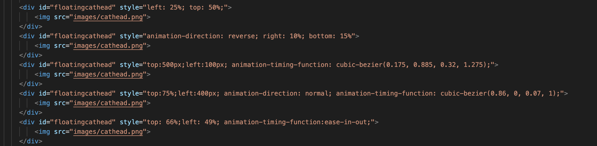
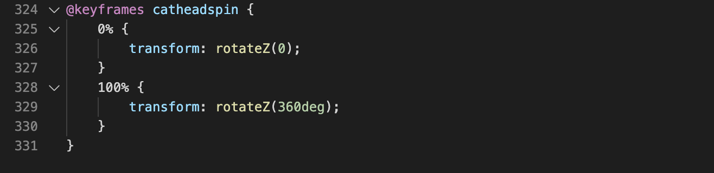

CSS Cat Page!!
This cat page was my biggest triumph with the CSS assignment. Here I learned how to animate elements using animation keyframes and cubic-bezier timing functions. Each cat head has a style attribute with different a unique position and animation motion. It looks like this:




Cats are taking over the Internet!